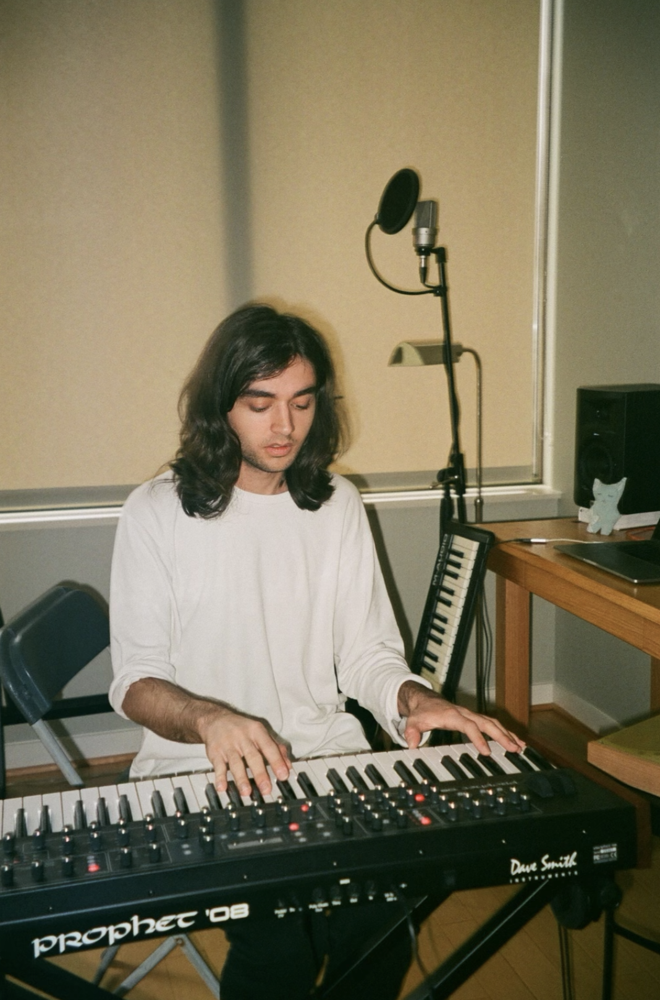
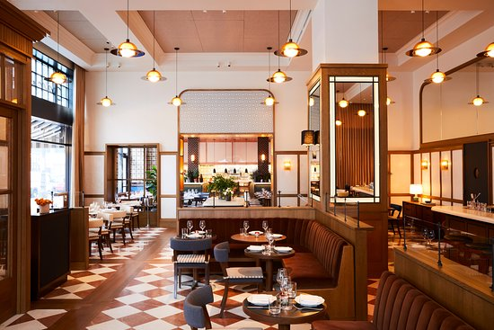

About Me!
I am a lover of music.
Music has been a part of my life for as long as I can remember. I've played piano since I was very young and recently began playing guitar. I am also an avid music listener, always searching for new and interesting music. I'm a big fan of hip hop, rock, and ambient music. 
I'm a server in a restaurant.
My current job is working as a server in a high end Italian restaurant. I've been in the industry for three years and have since developed excellent teamwork skills. Working in a restaurant requires a lot of communication and organization, skills that I've been able to hone in. 
I enjoy playing games.
Often in my free time I'll find myself playing video games. They help me escape reality for a bit and unwind after work. Some of my favorites are Super Smash Bros, Halo, Minecraft, and Dark Souls III.